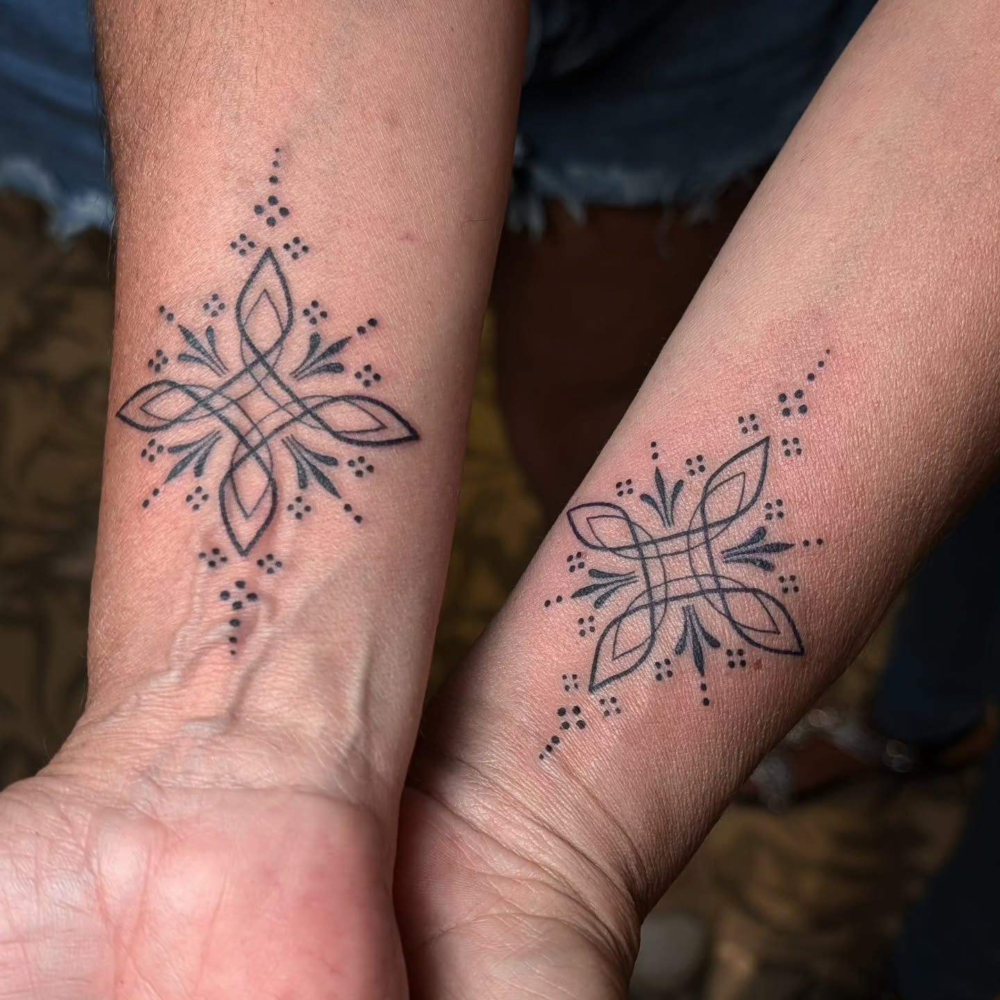
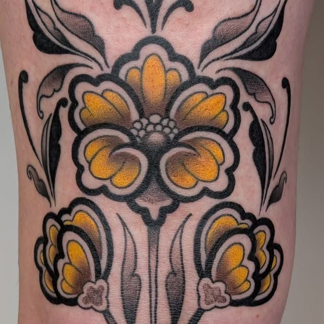
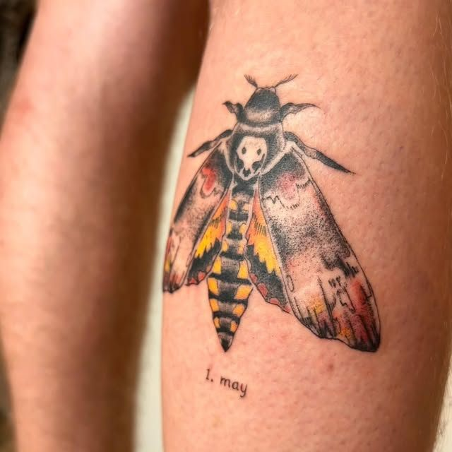
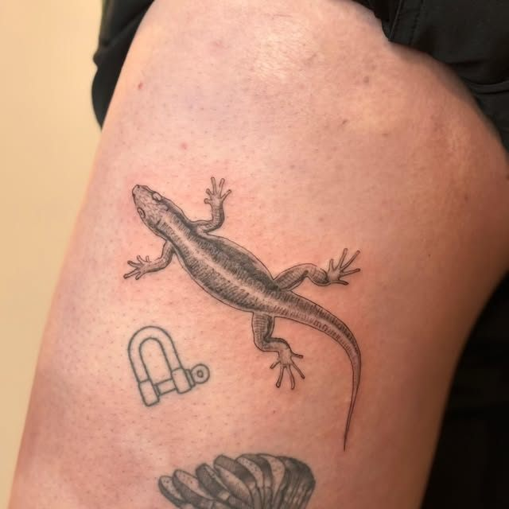
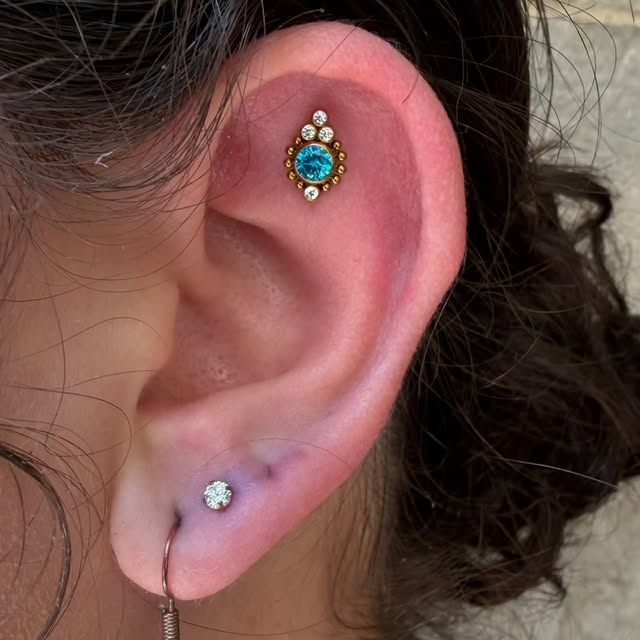
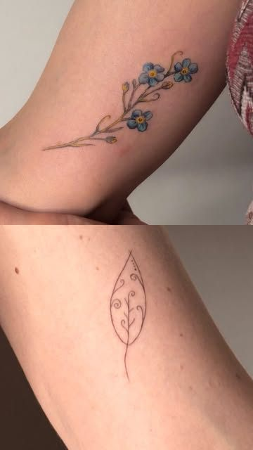
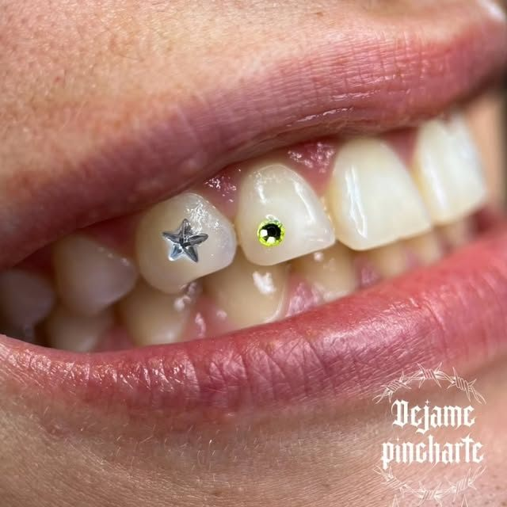

Desde 2008 · Barri Vell de Girona
Tatuajes, piercing y joyería en la Plaça del Vi
Un estudio con varios artistas y estilos: fine line, ornamental, neotradicional y color. También piercing con joyería de calidad, láser y gemas dentales.
4,7 en Google · 413 reseñas


Qué hacemos
- TatuajesDe fine line a piezas grandes en color
- PiercingRápido, limpio y con la joya adecuada
- JoyeríaPara estrenar o para cambiar la tuya
- LáserPara aclarar o eliminar tatuajes
- Gemas dentalesUn brillo pequeño en tu sonrisa
Técnica estéril y solo los mejores materiales.
Trabajos del estudio
Albert, Sufutattoo, Skaedoo, Hels, Nemesis, Julia, Nanachi y Guilla, además de artistas invitados. Cada uno con su estilo.





Regala un tatuaje
Diseña la tarjeta regalo aquí y pásate por el estudio para comprarla, o llámanos. La tarjeta es válida para tatuaje, piercing, joyería o gemas dentales.
MorganTattoo & Piercing · Girona
Tarjeta regalo
50 €
Para …
Vista previa · se compra en el estudio
Pasa el cursor por la tarjeta
413 reseñas en Google
«Una experiencia increíble con Ana. Ya van 7 tatuajes con ella […] El resultado final es espectacular, con un nivel de detalle y precisión impresionante. Además, el estudio estaba impecable»
Google
«Fui a hacerme un piercing por primera vez aquí y todo perfecto. Sin dolor,rápido,limpio…todo muy fácil.»
Google
«Increible trato y unos tatuajes increíbles, muy contento con la experiencia.»
Google
Plaça del Vi, 11
- Dónde
- En el Barri Vell de Girona, en la Plaça del Vi.
- Horario
- Lunes a sábado: 10:00 – 14:00 y 16:00 – 20:00
- Contacto
- 972 09 13 98 · @morgan_tattoo_girona